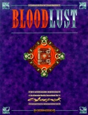

|  | Technical data |
| Supplement for the role-playing game Cyberpunk 2020, published by Ianus Games (Dream Pod 9) (1995) | |
| Theme | Alternate Reality : vampires |
| Background quality | 4 / 5 |
| Scenario quality | - |
| Rules quality | 4 / 5 |
| Artworks quality | 4 / 5 |
| Writing quality | 5 / 5 |
This supplement is part of Alternate Realities and is presented as a sequel to Night's Edge, focusing on vampires. In terms of content, there's a little bit of improvement, and we're getting over the mistakes we made in the first supplement. The world is presented continent by continent, we talk about the social organization of vampires, their link with gothic gangs, diseases, etc. Unfortunately, one pitfall was not avoided : this supplement should have been an addendum to Night's Edge, and to fill a small volume, the authors resorted to filling in a long story, a diary (to get into the mood) and a lot of NPCs that take up one page each. In short, it smells like White Wolf, it tastes like White Wolf... and of course it's a bit disappointing compared to the excellent quality of the previous Alternate Realities supplements.
{kind=link}